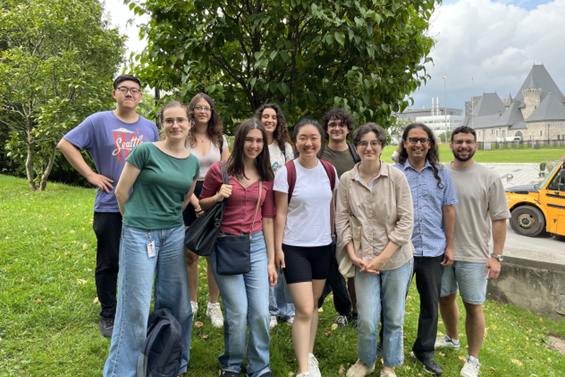

Members
Current Lab Members


Collaborators


Suresh Krishna
Associate Professor, Department of Physiology, McGill.
MBBS (Med School), AIIMS, New Delhi; PhD, NYU, New York.
Spent time at Columbia University, CNRS (Lyon), German Primate Center (Goettingen), MPI for Human Development (Berlin), before coming to McGill (Jan 2020).
Yohai-Eliel Berreby
Ph.D. student, Department of Physiology, McGill
Diplôme d’Ingénieur (combined B.Sc. and M.Sc. in Engineering), Télécom Paris, Palaiseau, France
MPSI/MP CPGE (Math/Physics Classes Préparatoires aux Grandes Écoles), Lycée Hoche, Versailles, France
Buxin Liao
Ph.D. Student, Integrated Program in Neuroscience, McGill.
M.Eng. Student, Biomedical Engineering, University of Electronic Science and Technology of China, Chengdu, China.
B.Eng. in Biomedical Engineering, Southeast University, Nanjing, China.
; GitHub
Maya Aderka
M.Sc. Student, Department of Physiology, McGill.
B.Sc. in Psychology and Computer Science with an emphasis on Neuroscience, Tel Aviv University, Tel Aviv, Israel.
During my B.Sc, I worked as a research assistant in Prof. Nitzan Censor lab, which studies memory and learning. I assisted in conducting behavioral studies, as well as studies involving EEG, fMRI and TMS.
In the final year of my B.Sc, I joined Prof. Yuval Nir’s sleep lab to help with an initiative to create SleepEEGpy, a platform to pre-process and analyse sleep EEG data.
Alex Zhao
B. Sc student, Neuroscience program, McGill
My research interests lie in computational neuroscience, as I believe that computational models have the power to capture the brain’s inner workings. In my free time I enjoy reading and solo traveling.
Jacky Chen
B.A. in Psychology with double minors in Behavioral Science and Science for Art Students, McGill
As someone who enjoys playing the piano, I am curious to explore the ways cognitive processes impact musical expression and attentional shifts. My research interests lie at the intersection of psychology, music, and cognitive science.
I was born in Shanghai, China, where I spent the first 18 years of my life. After completing high school, I relocated to Montreal to pursue my studies at McGill University. I really enjoy the lovely summer in Montreal!
Anna Rose Hunt-Isaak
BASc Honors Cognitive Science, McGill
I’m interested in exploring the intersection of neuroscience and computer science, especially with regards to how we can computationally model cognitive processing and develop a better understanding of how neural activity mediates observable behaviors.
My hobbies include baking, reading George Saunders, and layering poorly for winter runs
Yiqing Zhu
Non-thesis M.Sc student, Computer Science, McGill.
I have graduated from McGill University with a B.Sc. Honours in Computer Science and a minor in Statistics. During my undergraduate studies, I conducted interdisciplinary research at the intersection of biology, neuroscience, and computation. I’m now pursuing graduate studies with a focus on ML, AI, and the contribution of large language models to data research.
Edward Tong
B. Eng. Student in Bioengineering, McGill.
Bioengineering courses often focus on design like tissue engineering or microfluidic devices. However, my interests was peaked during a signal analysis class (BIEN462), learning about the diagnostic abilities of ECGs. I look forward to analyses other signals such as EEGs. In my spare time, I enjoy listening to music and playing videogames.
Youyou Yang
Master’s student in Computer Science (non-thesis), McGill. I completed a B.Sc. in Physics and Computer Science at McGill. I hold a quiet obsession with Dr. Wilder Penfield and I am currently exploring research in brain-inspired AI.
Where we are from
Current / Past
Alumni
- Post-doctoral fellow - Katarzyna Jurewicz
- Masters
- Amanda Pruss (2025), IPN
- Xinning Le (2025), IPN
- Haoxiang Liu (2024), IPN
- Buxin Liao (2024), IPN
- Oren Gurevitch(2025), Physiology
- Noa Kemp (2025), Physiology
- PHGY 396 - Sean Solomon, Sarah Beydoun, Pegah Aghili, Jacky Chen
- PHGY 461 - Isidore Victorri
- COMP 401 - Nevine Nzabonimpa, Evan Jiang
- COMP 396 - Evan Jiang
- COGS 401/444 - Injy Fouda, Romina Niksirat
- PSYC 385/395 - Anais Rubsamen, Alex Parent
- PSYC 494 - Youzhi Huang, Jacky Chen
- NSCI 410 - Alexandru Tecu, Lilia Fernane, Alex Zhao
- Mackey-Glass Fellowship – Tim Yang
- McGill-UAE summer internship - Rashed Alhosani
- MITACS Globalink Interns - Linjing Wang, Jonathan Morris
- NSERC SURA - Sabrina Du
- Summer interns - Evan Jiang, Yagya Joshi, Kevin (Yuze) Liu
- Undergraduate observers - Caden Welch, Max Tweedale, Elisa Niunin, Yavuz Shahzad, Divi Maheshwari, Lilie Jeanneaux, Yagya Joshi, Bradley Austin-Keiller, Lian Mouwes
- Interns (Google Summer of Code) - Dinesh Sathiaraj, Ioannis Valasakis, Prakanshul Saxena, Abhinav Venkatadri, Somnath Sharma, Jyothi Swaroop Reddy Bommareddy, Soham Mulye, Louis Martinez, Armaan Alam, Dinakar Chennupati, Dhruvanshu Joshi, Lihong Chen, Deepansh Goel
Us


